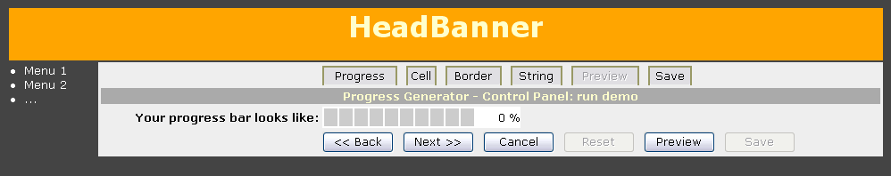

examples
examples$Date$
 Introduction
IntroductionThis example requires :
Be aware that:
This example will run a custom ProgressBar Controller Wizard integrated in your own existing pages. As other examples it will help you to create your own progress bar. You may even save the CSS and/or PHP code at end !
This example will show you how to customize all actions (display, preview, process). We will use IT template engine family, but you may use engine such as Smarty or even many others.
At line 12 is included the IT template engine ressource for default class name 'ActionDisplay'.
But we have choosen to include the generator in our own pages (itdynamic_generator.html) set at line 43.
For preview tab, we have to make it ourself. This is done on lines 46 to 57. CSS and Javascript code required for progress bar are merge into html page on lines 49 to 53.
The progress bar generated with all your options at line 47 is finally included into html page on lines 55, 56.
On lines 84 to 208, class MyProcessHandler is defined to replace default 'ActionProcess', that will help you to download the file that contents your progress bar PHP/CSS code (see option 'text/php' at line 172, rather than default 'text/plain').
Don't forget also on lines 88 to 90 code to manage action when user click on Cancel button.
And finally, the generator is create at lines 213 to 216, and run on line 218.
[Top]
 Render options
Render options [Top]
 Output
Output
[Top]
 PHP source syntax highlight
PHP source syntax highlight[Top]
 Play generator
Play generatorRun the script.
[Top]